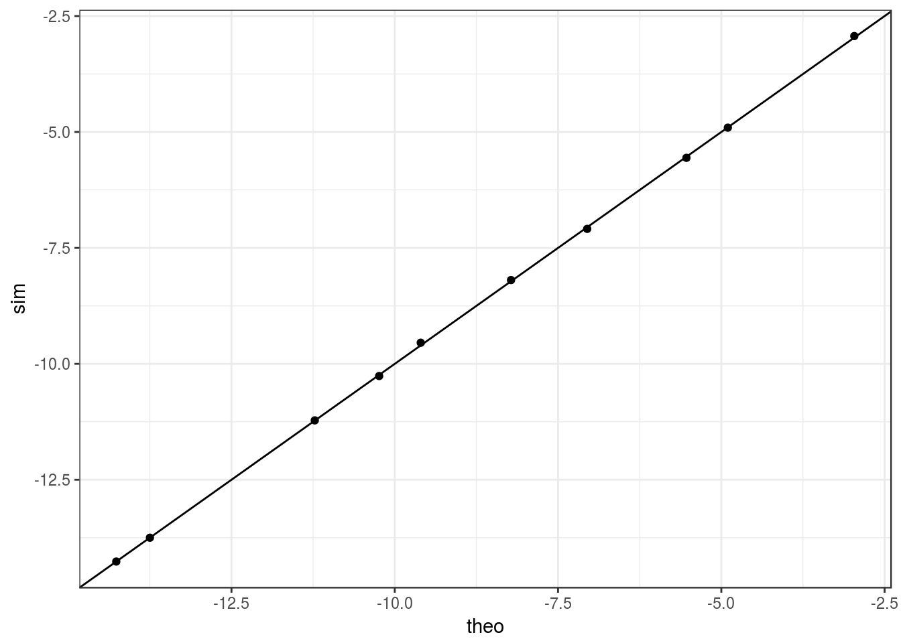

I verify that my integral calculation is indeed correct.
library(updog)
library(SuppDists)
library(gaussquad)## Loading required package: polynom## Loading required package: orthopolynomget_alpha <- function(mu, rho) {
mu * (1 - rho) / rho
}
get_beta <- function(mu, rho) {
(1 - mu) * (1 - rho) / rho
}
qbetabinom <- function(p, size, alpha, beta) {
qghyper(p = p, a = -alpha, k = size, N = -alpha - beta)
}
qbetabinom_mu_rho <- function(p, size, mu, rho) {
alpha <- get_alpha(mu = mu, rho = rho)
beta <- get_beta(mu = mu, rho = rho)
qbetabinom(p = p, size = size, alpha = alpha, beta = beta)
}
dbetabinom_hyper <- function(x, size, alpha, beta, log = FALSE) {
dghyper(x = x, a = -alpha, k = size, N = -alpha - beta, log = log)
}
dbetabinom_hyper_mu_rho <- function(x, size, mu, rho, log = FALSE) {
alpha <- get_alpha(mu = mu, rho = rho)
beta <- get_beta(mu = mu, rho = rho)
dbetabinom_hyper(x = x, size = size, alpha = alpha, beta = beta, log = log)
}
pbetabinom_hyper <- function(q, size, alpha, beta, log.p = FALSE) {
pghyper(q = q, a = -alpha, k = size, N = -alpha - beta, log.p = log.p)
}
pbetabinom_hyper_mu_rho <- function(q, size, mu, rho, log.p = FALSE) {
alpha <- get_alpha(mu = mu, rho = rho)
beta <- get_beta(mu = mu, rho = rho)
pbetabinom_hyper(q = q, size = size, alpha = alpha, beta = beta, log.p = log.p)
}
assertthat::are_equal(dbetabinom_hyper(2, 8, 2, 3), updog::dbetabinom(2, 8, 2, 3))## [1] TRUE#' @param prob The allele dosage
#' @param eps The sequencing error rate.
eta_fun <- function(prob, eps) {
prob * (1 - eps) + eps * (1 - prob)
}
#' @param eta probability after sequencing error rate
#' @param h The bias parameter
xi_fun <- function(eta, h) {
eta / (h * (1 - eta) + eta)
}
#' bb function of z that we are trying to integrate
#' @param x the number of A allele reads
#' @param n The number of total reads
#' @param z The latent variable we are integrating over
#' @param eps The sequencing error rate
#' @param h The bias parameter
#' @param tau The od parameter of the reads
#' @param alpha The allele frequency
#' @param rho The inbreeding coefficient of individual i
#' @param ploidy The ploidy of the species.
obj <- function(x, n, z, eps, h, tau, alpha, rho, ploidy) {
y <- qbetabinom_mu_rho(p = pnorm(z), size = ploidy, mu = alpha, rho = rho)
eta <- eta_fun(prob = y / ploidy, eps = eps)
xi <- xi_fun(eta = eta, h = h)
dbetabinom_hyper_mu_rho(x = x, size = n, mu = xi, rho = tau, log = TRUE)
}intobj <- function(x, n, eps, h, tau, alpha, rho, ploidy, mu, sigma2) {
pnormvec <- pnorm((c(-Inf, qnorm(pbetabinom_hyper_mu_rho(q = 0:ploidy, size = ploidy, mu = alpha, rho = rho))) - mu) / sqrt(sigma2))
wvec <- pnormvec[2:length(pnormvec)] - pnormvec[1:(length(pnormvec) - 1)]
eta <- eta_fun(prob = 0:ploidy / ploidy, eps = eps)
xi <- xi_fun(eta = eta, h = h)
ldbetavec <- dbetabinom_hyper_mu_rho(x = x, size = n, mu = xi, rho = tau, log = TRUE)
sum(wvec * ldbetavec)
}x <- 18
n <- 100
z <- -3
h <- 1
tau <- 0.01
alpha <- 1/6
rho <- 0.01
ploidy <- 6
sigma2 <- 1
mu <- 0
eps <- 0.01Compare to stochastic approximation
library(tidyverse)## Loading tidyverse: ggplot2
## Loading tidyverse: tibble
## Loading tidyverse: tidyr
## Loading tidyverse: readr
## Loading tidyverse: purrr
## Loading tidyverse: dplyr## Conflicts with tidy packages ----------------------------------------------## filter(): dplyr, stats
## lag(): dplyr, statsitermax <- 10
muvec <- rnorm(itermax)
sigma2vec <- rchisq(n = itermax, df = 1)
dfdat <- matrix(NA, nrow = itermax, ncol = 4)
for (index in 1:itermax) {
mu <- muvec[index]
sigma2 <- sigma2vec[index]
zvec <- rnorm(n = 10000, mean = mu, sd = sqrt(sigma2))
objout <- obj(x = x, n = n, z = zvec, eps = eps, h = h, tau = tau, alpha = alpha, rho = rho, ploidy = ploidy)
mean_obj <- mean(objout)
lower <- mean_obj - 2 * sd(objout) / sqrt(length(objout))
upper <- mean_obj + 2 * sd(objout) / sqrt(length(objout))
theo_int <- intobj(x = x, n = n, eps = eps, h = h, tau = tau, alpha = alpha, rho = rho, ploidy = ploidy, mu = mu, sigma2 = sigma2)
dfdat[index,] <- c(theo_int, mean_obj, lower, upper)
}dfdat <- as_data_frame(dfdat)
names(dfdat) <- c("theo", "sim", "lower", "upper")
ggplot(dfdat, aes(x = theo, y = sim)) +
geom_point() +
theme_bw() +
geom_abline()
sessionInfo()## R version 3.3.2 (2016-10-31)
## Platform: x86_64-pc-linux-gnu (64-bit)
## Running under: Ubuntu 16.04.3 LTS
##
## locale:
## [1] LC_CTYPE=en_US.UTF-8 LC_NUMERIC=C
## [3] LC_TIME=en_US.UTF-8 LC_COLLATE=en_US.UTF-8
## [5] LC_MONETARY=en_US.UTF-8 LC_MESSAGES=en_US.UTF-8
## [7] LC_PAPER=en_US.UTF-8 LC_NAME=C
## [9] LC_ADDRESS=C LC_TELEPHONE=C
## [11] LC_MEASUREMENT=en_US.UTF-8 LC_IDENTIFICATION=C
##
## attached base packages:
## [1] stats graphics grDevices utils datasets methods base
##
## other attached packages:
## [1] dplyr_0.7.4 purrr_0.2.2.2 readr_1.0.0
## [4] tidyr_0.6.1 tibble_1.3.3 ggplot2_2.2.1
## [7] tidyverse_1.1.1 gaussquad_1.0-2 orthopolynom_1.0-5
## [10] polynom_1.3-9 SuppDists_1.1-9.4 updog_0.1.0
##
## loaded via a namespace (and not attached):
## [1] reshape2_1.4.2 haven_1.0.0 lattice_0.20-34 colorspace_1.3-2
## [5] htmltools_0.3.6 yaml_2.1.14 rlang_0.1.2 foreign_0.8-67
## [9] glue_1.1.1 modelr_0.1.0 readxl_0.1.1 bindrcpp_0.2
## [13] bindr_0.1 plyr_1.8.4 stringr_1.2.0 munsell_0.4.3
## [17] gtable_0.2.0 rvest_0.3.2 psych_1.6.12 evaluate_0.10.1
## [21] labeling_0.3 knitr_1.16 forcats_0.2.0 parallel_3.3.2
## [25] broom_0.4.2 Rcpp_0.12.13 backports_1.0.5 scales_0.4.1
## [29] jsonlite_1.5 mnormt_1.5-5 hms_0.3 digest_0.6.12
## [33] stringi_1.1.2 grid_3.3.2 rprojroot_1.2 tools_3.3.2
## [37] magrittr_1.5 lazyeval_0.2.0 pkgconfig_2.0.1 xml2_1.1.1
## [41] lubridate_1.6.0 assertthat_0.2.0 rmarkdown_1.6 httr_1.2.1
## [45] R6_2.2.2 nlme_3.1-131This R Markdown site was created with workflowr